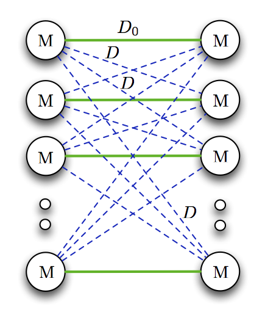
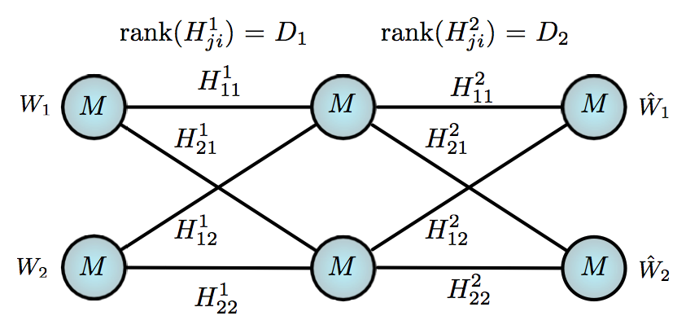
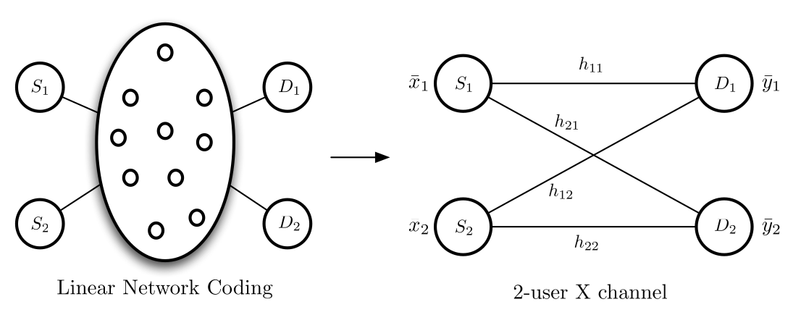

Research Interests
- Machine Learning & Signal Processing
- CPU-GPU-TPU Architectures for ML
- Information Theory Applications
- 3GPP & Wifi Standards
- Multiple Divisional Recognition Awards @ Intel Labs for leading Algorithms Research in DARPA SpaceBACN program
- Distinguished Invention Award @ Intel Labs for ML based PHY techniques in April 2021
- Best Paper Award in IEEE International Conference on Communications (ICC), June 2021
Hi ! I'm currently a Senior Principal Architect at Marvell Technology since Aug 2024. Previously I was a Staff Applied AI Research Scientist @ Intel Labs working on Signal Processing and AI/ML algorithms design between Sep 2018 and Aug 2024. Prior to that, I was a Staff Systems Researcher at Qualcomm Research - Corporate R & D, San Diego between 2014 and 2018. Between 2003 and 2009, I held various positions at Intel Corporation and Samsung R&D Institute. I received my Ph.D. in Electrical & Computer Engineering from University of California, Irvine (UCI) in 2014, advised by Prof. Syed Ali Jafar and my B.E.(Hons.) in Electrical Engineering from BITS Pilani, India in 2003. At UCI, I worked on Information Theoretic Capacity characterization of Multi-user Interference networks with Non-generic channels. Over the last 2 decades, I've contributed to various product designs and features including but not limited to Samsung Kalmia Modems, Qualcomm Snapdragon chipsets, Oneweb satellite systems, Intel FlexRAN, DARPA SpaceBACN.
University of California, Irvine Ph.D. in Electrical & Computer Engineering Sep 2011 - Sep 2014 Thesis : Interference Alignment - Beyond Generic Channels Advisor : Prof. Syed A. Jafar PhD Committee: Prof. Hamid Jafarkhani & Prof. Ender Ayanoglu M.S. in Electrical & Computer Engineering Sep 2009 - Sep 2011 Birla Institute of Technology & Science, Pilani (India) B.E. (Hons.) in Electrical Engineering Aug 1999 - Jul 2003
Marvell Technology, Santa Clara -- Connectivity products
Senior Principal Architect Aug 2024 - Present
Design of Low power DSP for Data Center and AI applications in Marvell Connectivity group
Intel Labs, Santa Clara -- Systems, Software and Architecture Org
Staff Applied AI Research Scientist Sep 2018 - Aug 2024
Lead the Research and design efforts in various phases of DARPA SpaceBACN
program to build a Reconfigurable Coherent Optical Modem
(100Gbps, 100W, 100k$) and successfully enabled Intel to procure DARPA contracts worth 20M+ USD. I lead a team of four researchers for DSP Algorithms research and
design for building the Modem, which was targeted for Optical Inter-satellite links between various LEO-LEO and LEO-GEO constellations. I conceived the signal
processing architecture at the inception of the program and lead the design efforts enabling Intel to win over 7 competitors. Presented research on system
characterization & performance to DARPA and MIT Lincoln Labs in monthly meetings for over 2 years and also enabled standardization of transceiver performance.
Delivered RTL designs using Simulink HDL methodology, and was first author of 4 design inventions among 9 patents filed.
I was also responsible for research and design of Probabilistic AI/ML techniques such as Bayesian Inference for Computing and Communications, primarily using
Variational Inference (VI) and Markov Chain Monte Carlo (MCMC) techniques. Co-author and inventor of Metropolis-Hastings Gradient Descent, which combined MCMC and
Gradient descent techniques to enable superior performance at low complexity, winning ICC 2021 Best Paper Award in Machine Learning for Communications Track.
Characterized performance and complexity of Expectation Propagation based algorithms targeting Intel FlexRAN. Liaison for various NSF and Intel sponsored
university research programs such as MLWiNS and RINGS.
Qualcomm Research, San Diego -- Corporate R & D / Office of the Chief Scientist
Staff Systems Researcher Oct 2014 - Aug 2018
Research and System design for Oneweb Low Earth Orbit (LEO) Satellite Communication Systems - I worked on the design and analysis of Reverse link channels
primarily on User Terminals. This was an adaptation of LTE air interface with single carrier waveforms enabling Satellite to Ground communication in Ka, Ku bands,
which eventually got standardized as part of 3GPP Non-Terrestrial Networks (NTN) Standards. Previously, I contributed to Research & Design for Non-linear
Interference Cancellation for Carrier aggregation usecases in LTE and 5G NR systems. Such carrier aggregation caused receiver desense due to harmonics and
intermods within the receiver bands, which were digitally removed using suitable digital self interference cancellation mechanisms. These designs were
commercialized in various Qualcomm Snapdragon Modem chipsets between 2014 and 2017, used by Apple, Samsung, LG etc..
Samsung R & D Institute, Bangalore -- Modem Algorithms Lab / Wireless Terminals Division
Lead Engineer Apr 2006 - Jul 2009
Senior Engineer Dec 2004 - Mar 2006
Responsible for Research, Design of Interference Cancellation algorithms for 2G/3G Communication systems. Lead the Single antenna interference cancellation (SAIC)
design and development for GSM/GPRS/EDGE chipsets of Samsung using Ceva Teak and Teaklite 3 DSP. Contributed to various stages of product design from algorithm research, design and DSP assembly programming, Inter-Operability testing and Field testing. Optimized various algorithms to meet stringent cycle consumption and memory budgets, and was later commercialized in Kalmia line of Samsung Multi-mode chipsets between 2009 and 2011. I was also part of 3GPP2 1xEVDO standardization group of Samsung focusing on Radio Link Protocol designs and Multi-flow architectures enabling diverse QoS guarantees, for which I also contributed to Modem designs for packet scheduling and QoS provisioning. Submitted several standard contributions towards new architecture of 1xEVDO Rel-B and Rel-C.
Intel Corporation, Bangalore -- Technology & Manufacturing Group
Software Engineer Aug 2003 - Dec 2004
Design of various manufacturing system (FAB/ATM) software enhancements for the mission-critical system called "Recipe Correlation Table" (RCT) that manages lot-processing recipes in all Intel sites. Also, I was a developer for Unit Level Traceability (ULT) handler software for an important traceability program adopted in Intel manufacturing sites.
DARPA SpaceBACN - DSP Architecture
- P1: USPTO 20240146500 A1 Method and Apparatus for Reconfigurable Clock Data Recovery in Fading Environments
Intel : Sundar Krishnamurthy, Deepak Dasalukunte, Conor O' Keeffe, Finbarr O'Regan, Amy Whitcombe - P2: USPTO 20240137115 A1 System and Method for Closed loop Doppler Tracking in Inter Satellite Links
Intel : Sundar Krishnamurthy, Conor O' Keeffe, Deepak Dasalukunte, Finbarr O'Regan, Abhinav Vinod - P3: USPTO Reconfigurable Adaptive Equalization and Carrier Phase Recovery
Intel : Sundar Krishnamurthy, Daniel Zeleznikar, Deepak Dasalukunte, Jie Zhu, Paulino Mendoza, Conor O'Keeffe, Finbarr O'Regan, Ahmet Kirac - P4: USPTO Reconfigurable deframer for optical communications
Intel : Sundar Krishnamurthy, Deepak Dasalukunte, Conor O'Keeffe, Finbarr O'Regan, Paulino Mendoza, Vesh Banjade, Daniel Zeleznikar - P5: USPTO Coherent reception of on/off keying and pulse position modulations
Intel : Daniel Zeleznikar, Sundar Krishnamurthy, Deepak Dasalukunte, Ahmet Kirac, Ricard Enrich, Conor O'Keeffe, Finbarr O'Regan, Jie Zhu
- P6: USPTO 20240146416 A1 Method and apparatus for enhancement of common mode rejection in coherent optic receivers
Intel : Conor O' Keeffe, Anthony Kelly, Adam Hermann, Finbarr O'Regan, Sundar Krishnamurthy, Amy Whitcombe, Ricard Enrich, Deepak Dasalukunte - P7: USPTO 20240106452 A1 Mixed-signal processing integrated in hybrid voltage-time ADC
Intel : Amy Whitcombe, Brent Carlton, Sundar Krishnamurthy, Deepak Dasalukunte - P8: USPTO 20240111346 A1 Chip and platform level power monitoring and sequencing for reliable startup and mode switching
Intel : Deepak Dasalukunte, Amy Whitcombe, Finbarr O'Regan, Conor O' Keeffe, Sundar Krishnamurthy - P9: USPTO In-Field Droop Measurement and Compensation for a Coherent Optical Transceiver
Intel : Adam Hermann, Conor O'Keeffe, Anthony Kelly, Peter Kurahashi, Ricard Enrich, Deepak Dasalukunte, Sundar Krishnamurthy, Amy Whitcombe
- P10: USPTO 20230198815 A1 Methods and devices for joint processing in Massive MIMO systems
Intel : Lu Lu, Sundar Krishnamurthy, Clark Chen, Thushara Hewavithana - P11: USPTO System and methods for Clustering, User Association and Power Control to enable Coherent Joint Transmission
Intel : Sundar Krishnamurthy, Lu Lu, Clark Chen, Thushara Hewavithana
- P12: USPTO 20220209891 A1 Communication devices and methods based on markov-chain monte-carlo (mcmc) sampling (Distinguished Invention)
Intel : Sundar Krishnamurthy, Lu Lu, Niranjan Gowda, Le Liang, Richard Dorrance, Deepak Dasalukunte, Arvind Merwaday - P13: USPTO 20210174122 A1 Probabilistic sampling acceleration and corner feature extraction for vehicle systems
Intel: Leobardo Macias, German Garcia, David Gutierrez, Sundar Krishnamurthy, Le Liang, Lu Lu, Paulino Mendoza, Sami Mumtaz, Julio Esquivel, Rodrigo Camacho
- P14: USPTO 20170134074 A1 Cancellation signal generation for multiple input and multiple output (mimo) analog interference cancellation
Qualcomm: Ozgur Dural, Insoo Hwang, Won-ick Lee, Samir Soliman, Mark Maggenti, Kaushik Chakraborty, Sundar Krishnamurthy - P15: USPTO 8442103 Method and system for processing a signal in a communication system (Prefiltering for minimum phase)
Samsung: Sundar Krishnamurthy
- P16: INDIAN 257366 A method for value based shortening of sequence numbers in headers of ARQ protocols, used in communication systems
Samsung: Sundar Krishnamurthy, VTSV Prasad - P17: INDIAN 257339 A method for performing reliable and best effort data transfer with fragmentation and framing in link protocols, used in communication systems
Samsung: VTSV Prasad, Ravi K Gouru, Sundar Krishnamurthy
Thesis - Interference Alignment : Beyond Generic Channels
The radical idea of Interference alignment enabled Capacity or Degrees of Freedom characterization (DoF, a first order approximation) for many multi-user interference networks. Various alignment schemes provided fundamental insights into the number of accessible signal dimensions in communication networks where the output signals are linear functions of the input signals.
Most of the prior art dealt with generic channels wherein the channel coefficients are assumed to be independent and drawn from a continuous distribution, continuous alphabet with infinite diversity, and the network is often single-hop. These assumptions were challenged due to the following reasons
- Poor scattering in MIMO systems and network topology lead to spatial dependencies, manifested as rank deficient channels,
- Multi-hop dependencies arise due to the presence of relays, and
- Linear network coding applications (as in wired networks) act as finite field counterparts of wireless networks, with limited diversity.
Single-hop Rank-deficient Interference channel: We found the DoF of the K-user MIMO rank deficient interference channel, with different ranks for the direct (D0) and the cross channels (D). For such rank deficient interference channels, it was shown that
- The rank deficiency of direct channels does not help DoF and could hurt, while
- The rank-deficiency of cross-channels does not hurt DoF and could improve.

Conferences - Globecom 2012 , ISIT 2014 Journal - Trans on. Info Theory, Jan 2015
Multi-hop Rank-deficient Interference channel: We found the DoF of 2-hop MIMO rank deficient interference channel with different channel ranks in the first (D1) and the second hops (D2), for which a rank-matching principle was identified reminiscent of impedance matching in circuit theory. For this channel, the DoF loss was shown to be the rank-mismatch (|D1-D2|) between the two hops under moderate rank deficiencies.

Conference - Globecom 2014 Journal - Trans. on Info Theory, Sep 2015
Finite field channels: Capacity results for the finite field counterparts of wireless networks were found, in order to explore the implications of channels being from a finite alphabet with limited diversity. By characterizing the capacity of constant finite field channels over Fp^n for 2-user X channel and 3-user interference channel, interesting parallels were drawn between p and SNR, and n and Channel Diversity.

Conference - ISIT 2013 Journal - Trans. on Info Theory, July 2014
Journal Publications
- J1 : Hua Sun, Sundar R. Krishnamurthy, Syed A. Jafar, Rank-Matching for Multihop Multiflow, IEEE Transactions in Information Theory, Vol. 61, no. 9, pp. 4751 - 4764, Sep 2015 (Arxiv: 1405.0724)
- J2 : Sundar R. Krishnamurthy, Abinesh Ramakrishnan, Syed A. Jafar, Degrees of Freedom of Rank Deficient MIMO Interference Networks, IEEE Transactions in Information Theory, Vol. 61, no. 1, pp. 341 - 365, Jan 2015
- J3 : Sundar R. Krishnamurthy, Syed A. Jafar, On the Capacity of the Finite Field Counterparts of Wireless Interference Networks, IEEE Transactions in Information Theory, Vol. 60, no. 7, pp. 4101- 4124, July 2014 (Arxiv: 1304.7745)
- C1: Niranjan Gowda, Sundar Krishnamurthy, Andrey Belogolovy, Metropolis-Hastings Random Walk along the Gradient Descent Direction for MIMO Detection, IEEE International Conference on Communications (ICC), Montreal, June 2021 (Best Paper Award)
- C2 : Sundar R. Krishnamurthy, Syed A. Jafar, Rank-Matching for Multihop Multiflow, IEEE Global Telecommunications Conference (GLOBECOM), Austin, December 2014
- C3 : Abinesh Ramakrishnan, Sundar R. Krishnamurthy, Syed A. Jafar, Yaming Yu, Degrees of Freedom of Interference channel with Rank-Deficient Transfer matrix, IEEE International Symposium on Information Theory (ISIT), Honolulu, July 2014
- C4 : Sundar R. Krishnamurthy, Syed A. Jafar, Precoding Based Network Alignment and Capacity of a Finite Field X Channel, IEEE International Symposium on Information Theory (ISIT), Istanbul, July 2013
- C5 : Sundar R. Krishnamurthy, Syed A. Jafar, Degrees of Freedom of 2-user and 3-user Rank-Deficient MIMO Interference Channels, IEEE Global Telecommunications Conference (GLOBECOM), Anaheim, December 2012
- C6 : Sundar R. Krishnamurthy, An Efficient Approach to Minimum Phase Prefiltering of Short Length Filters, 8th IEEE International Symposium on Signal Processing and Information Technology (ISSPIT), Sarajevo, December 2008
Copyright information for IEEE publications: Copyright is held by IEEE. Personal use of this material is permitted. However, permission to reprint/republish this material for advertising or promotional purposes or for creating new collective works for resale or redistribution to servers or lists, or to reuse any copyrighted component of this work in other works must be obtained from the IEEE.
Courses
Stanford (Coursera): Machine Learning, Neural Networks and Deep Learning, Improving Deep Neural Networks, Structuring Machine Learning Projects, Convolutional Neural Networks, Sequence Models
UC Irvine(Graduate): Information Theory, Estimation and Detection Theory, Random Processes, Design & Analysis of Algorithms, Advanced System Software, Digital Signal Processing, Digital Image Processing, Digital Communications, Space Time Coding, Wireless Communications
Competencies
Software: Matlab, Simulink, C/C++, CUDA, Python, SQL, Java
Tools: Visual Studio, VTune, Intel AVX2, AVX512
DSP: Simulink-HDL, QDSP, Ceva Teak, Teaklite-3
ML Frameworks: Tensorflow, PyTorch, Caffe, Keras, Stan, OneDNN, NumPy, OpenCV, Jupyter
Reviewer: IEEE Transactions in Information Theory, IEEE Transactions in Signal Processing, IEEE Transactions in Vehicular Technology, IEEE Transactions in Wireless Communications, and several conferences
Member: IEEE Information Theory Society, IEEE Signal Processing Society, IEEE Communications Society